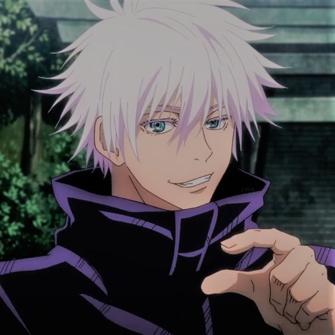
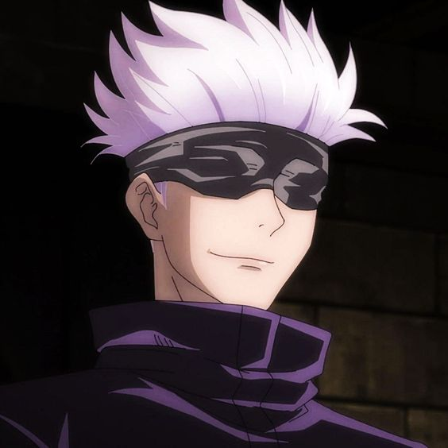
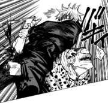
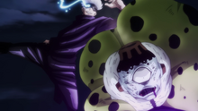
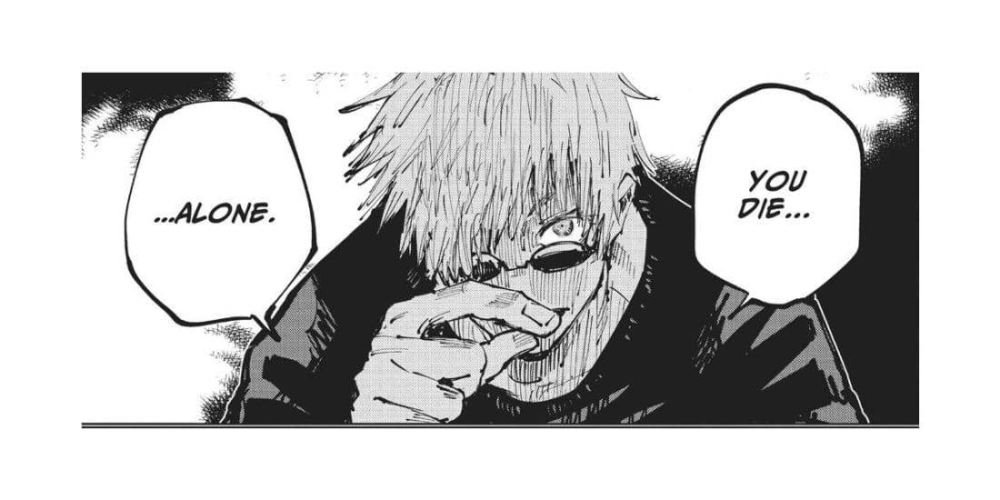
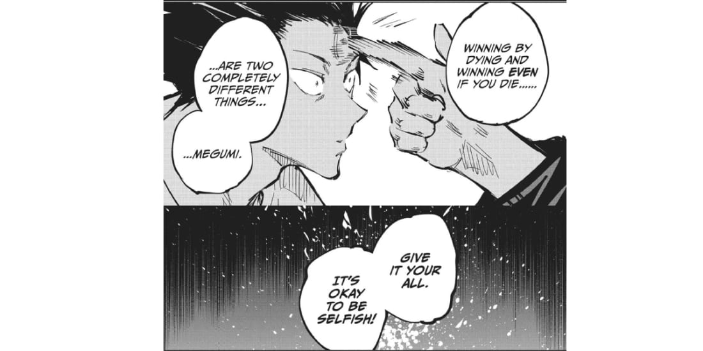

❛❛ Throughout Heavens and Earth, I Alone Am The Honored One ❜❜
Introduction
Satoru Gojo is one of the main and overarching protagonists of the popular 2018 dark fantasy anime and manga series Jujutsu Kaisen.
He is known as the Strongest Jujutsu Sorcerer of the present day and works as a teacher at Tokyo Metropolitan Jujutsu Technical school, Satoru is rank as a Special-Grade Jujutsu Sorcerer.
Satoru Gojo Arrives in Battle.
About
Satoru is a tall man, towering over his students, and is considered to be very attractive by many people. He has white hair that's often spiked up, but Satoru lets it down when he's in more casual attire. Satoru has bright blue eyes, but they're usually covered by his signature black blindfold or a pair of dark sunglasses. Satoru’s Attraction and Strength is hidden under his eye mask.
While working, Gojo wears an all-black high-necked jacket with matching pants and dark dress boots. In the past, Gojo has worn bandages over his eyes rather than his simple blindfold. He has several different casual attires that usually include long-sleeved shirts and slacks.
Satoru was born in the Gojo Clan, one of the 3 big clans which have long histories and authorities. The power balance in the Jujutsu world is kept by Satoru. His existence is a threat and deterrent to evil curse users. The total amount of bounty on Satoru was over was 100 million yen (10 billion dollars!) shortly after his birth.
❛❛ It’ll be fine. I’m the strongest there is, after all. ❜❜
Personality
- Satoru is a complex individual. He is normally seen to be nonchalant and playful towards his students, close colleagues, and friends. However, he is unsympathetic and cruel towards sorcerer executives, an example being his blatant disrespect towards Principal Gakuganji, and his enemies.
- He is extremely confident in his abilities and reputation as a powerful sorcerer, believing himself to be invincible. His opinion of others often only go as far as his judgement of their strength, and he is quite apathetic towards anyone he deems weak. Additionally, greatly influenced by his own desire for power, he is very arrogant. He is convinced that he is the strongest in the world, which he technically is, claiming, during his fight with Toji Fushiguro, that "throughout the Heavens and earth, he alone is the honored one."
- During intense battles, Satoru is seen to occasionally fall into a frenzied fighting state, urged by his determination for victory and undeniable proof that he alone is the strongest. His combative style is characterized by his aggressive and domineering attacks, while flaunting his mastered techniques to his opponents. Furthermore, in a crisis, he is capable of being cold-blooded. He will prioritize his enemies' destruction over saving innocent people when he believes that the sacrifice is unavoidable. However, this only extends to the people killed by his opponent; he will not do any lasting harm to or kill anyone innocent to gain the upper hand.
- Nevertheless, despite his haughtiness and strength, Satoru is more human than he first appears. After defeating Toji, Satoru retrieved Riko's corpse with a sorrowful look, showing that albeit his recent conceited victory temporarily clouding his feelings, he still felt some grief over her death. He sought to kill the Star Religious members that were laughing over Riko's death, though was stopped by Suguru Geto -- who he relied on as a moral compass at that time -- before taking any action. Furthermore, Satoru was later left visibly horrified and panicked after learning that Suguru, his one and only best friend, had become a murderous curse user. Satoru attempted to reason with his friend, but eventually realized and accepted that he lost the one person he truly saw as an equal. After having to put an end to Suguru before more calamity arose, it was Satoru's trauma over losing his best friend that caused his ultimate downfall in Shibuya. He was also distraught when Yuji seemingly died.
- Satoru's endgame is to reform the jujutsu world from the bottom-up through education. He seeks to foster a new generation of sorcerers that he hopes will one day become his equals.
- He used to eat sweets for quick thinking, and then came to have a sweet tooth.
- His homeroom teacher in school was the principal Yaga.
- He can do anything easily, so he tries not to do much “to train future generations”.
- Gojo is a non-drinker.
❛❛ Searching for someone to blame is just a pain. ❜❜
Abilities
Overall Skill Level:
Even among the special grade sorcerers, Satoru is known to be the strongest sorcerer in the series, holding both immense amounts of cursed energy and a dangerously powerful technique. As a student, Satoru and Suguru were both considered "the strongest", capable of making short work of experienced and powerful curse users.
Master Hand-to-Hand Combatant:
Satoru, in addition to his overwhelming levels of cursed energy, is also an incredibly formidable martial artist in close combat, with extraordinary physical prowess to back up his skills. He was capable of completely overpowering Jogo in hand-to-hand combat, delivering several precise attacks on Jogo's fatal spots, and could even casually fight off and overpower both Jogo and Hanami with sheer close combat, easily countering their attacks and landing powerful hits that swiftly pummeled them into submission.
Immense Strength:
Satoru possesses tremendous physical strength to fight against powerful curses without a problem, easily causing severe injuries to Jogo with powerful punches and throwing him a considerable distance with a single kick during their fight.
Immense Speed & Reflexes:
Satoru is an extremely fast fighter, capable of moving faster than the eye could perceive. He managed to easily outpace Jogo, throwing almost imperceptible punches and kicks. Satoru can also eliminate a thousand transfigured humans in five minutes.
Tactical Intellect: Gojo is quite tactical and capable of figuring out his opponent's plan with minimum information. He has also shown to be extremely adaptable to any enemy he has ever faced so far, knowing precisely what to do to counter their techniques and find ways to defeat them.
Jujutsu Techniques


Friends & Relationships
Satoru was born in the Gojo Clan, One of the 3 Big Clan’s that has long history and authorities all over the Jujutsu World. He was enrolled at Tokyo Jujutsu Tech by his clan and there he met Suguru Geto and Shoko Ieiri. Yaga Masamichi (now the principal of Tokyo Jujutsu Tech) became their homeroom teacher at that time. After Suguru committed genocide, Satoru became a teacher at the school to teach new generations jujutsu sorcerer and have allies that will be his equal someday.
Before he became a teacher, and after Suguru; Satoru visited Fushiguro Megumi (Toji Fushiguro’s son and known as the Ten Shadows User) who was a 1st grader at that time. He was the first jujutsu sorcerer that Gojo recruited and taken under his wing as a way to offset his being sold to the Zen'in clan.
You can click on the links bellow if you want to read more about them.
- Megumi Fushiguro
- Yuta Okkotsu
- Suguru Geto
- Michizane Sugawara
- Masamichi Yaga
- Ieiri Shoko
- Kento Nanami
Satoru Gojo visiting Megumi

❛❛ However, being a jujutsu sorcerer is an individual sport.
Yes. But no matter how many allies you have around you
… You die alone.❜❜

❛❛ Winning by dying and winning even if you die are two completely different things Megumi.
Give it your all. It’s okay to be selfish.❜❜